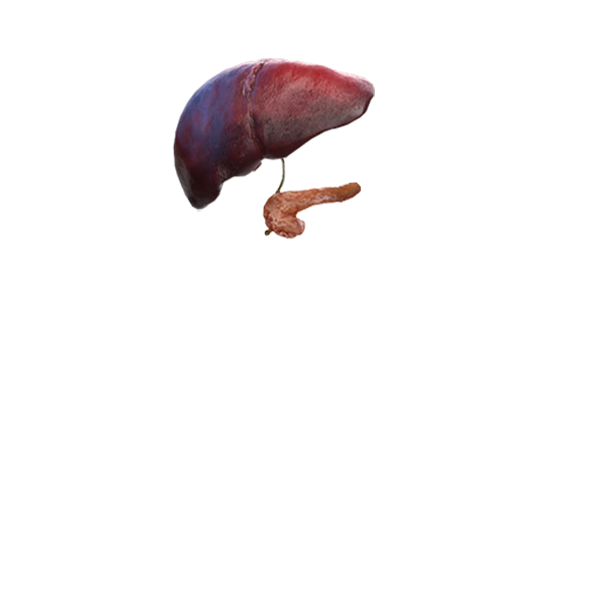
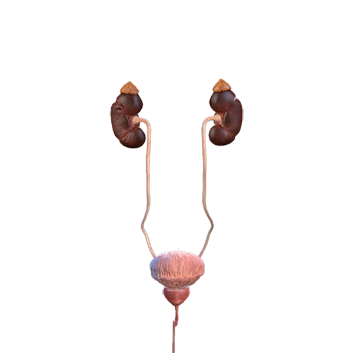

Секреты человека
☰
Главная
Органы Чувств
Мышцы и Кости
Органы и Пищеварение
Дыхание и Кровоток
Интересные факты
Органы и Пищеварение
Печень
Почки
Желудок
Кишечник
 
Строение печени
Строение почек и мочевого пузыря
Строение желудка
Строение кишечника